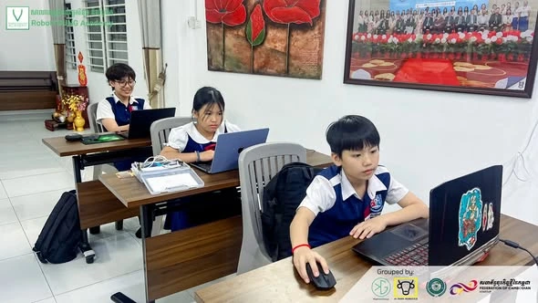
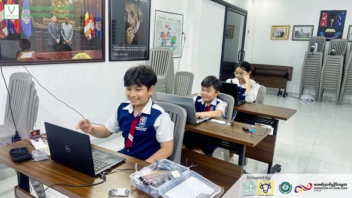
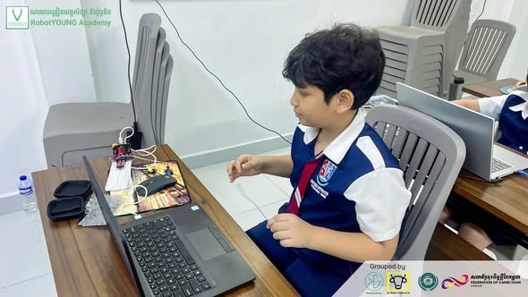
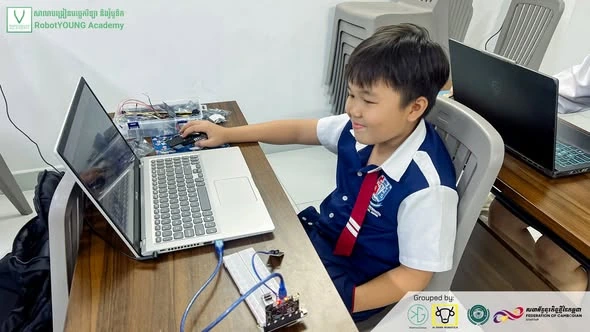

🤖ជំនាញបច្ចេកវិទ្យា មិនមែនរៀនត្រឹមតែពីសៀវភៅទេ—តែចាប់ផ្ដើមពីការតភ្ជាប់ សាកល្បង និងបង្កើតដោយដៃផ្ទាល់! -Technology skills don’t come from textbooks alone, they begin with connecting, experimenting, and building with your own hands!
នៅក្នុងថ្នាក់ STEM Robotics Engineering Program សិស្សានុសិស្សរបស់យើងកំពុងរៀនស្គាល់ និងអនុវត្តជាមួយ និងអនុវត្តជាមួយឧបករណ៍អេឡិចត្រូនិក Sensor និងការតភ្ជាប់ខ្សែភ្លើង (Wiring Connections) តាមរយៈការរៀនបែប Hands-on Learning។
តាមរយៈសកម្មភាពជាក់ស្តែងនេះ សិស្សបានអនុវត្តការតភ្ជាប់សៀគ្វី ស្វែងយល់ពីតួនាទីរបស់ Sensor និងឧបករណ៍អេឡិចត្រូនិក ព្រមទាំងសាកល្បង និងកែតម្រូវការតភ្ជាប់ ដើម្បីឱ្យប្រព័ន្ធដំណើរការបានត្រឹមត្រូវ។
EN: Real technology skills don’t come from textbooks alone—they begin with hands-on exploration, experimentation, and real-world practice!
In our STEM Robotics Engineering Program, students are learning and working hands-on with electronic components, sensors, and wiring connections through practical, experience-based learning.
Through this activity, students practice connecting circuits, explore how sensors and electronic components work, and test and troubleshoot their wiring connections to make the system function properly.
This hands-on approach not only strengthens their knowledge of Electronics, Sensors & Robotics, but also develops Critical Thinking, Problem-Solving, and an Engineering Mindset — essential skills for future innovators and creators.
#STEM#Robotics#HandsOnLearning#Electronics#Sensors#Engineering#YoungEngineers#FutureInnovators#STEMCambodia#RoboticsCambodia



